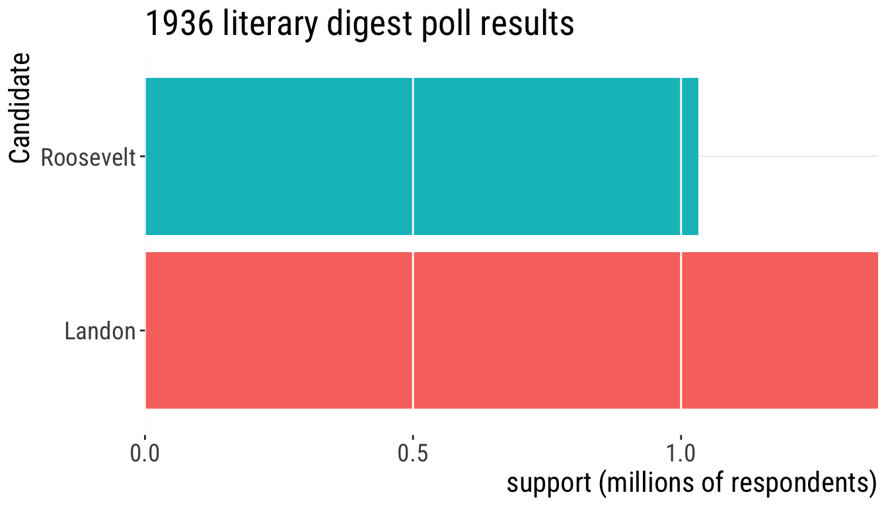
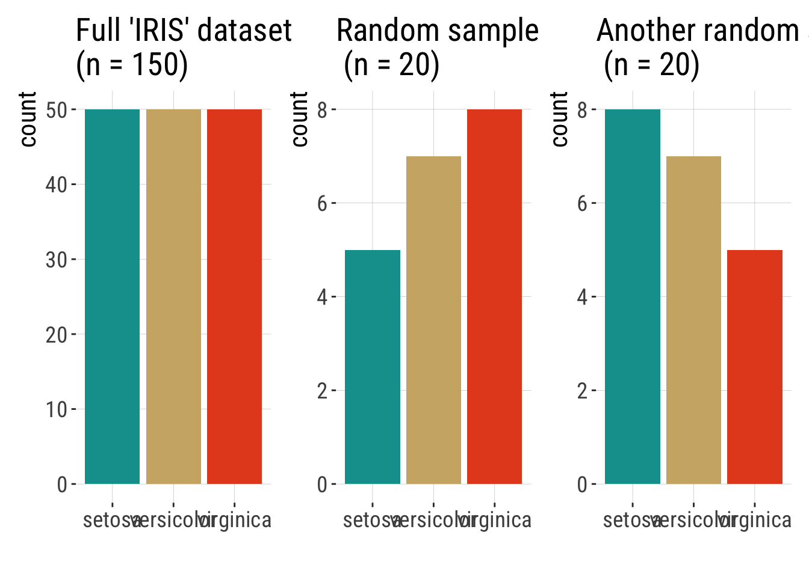
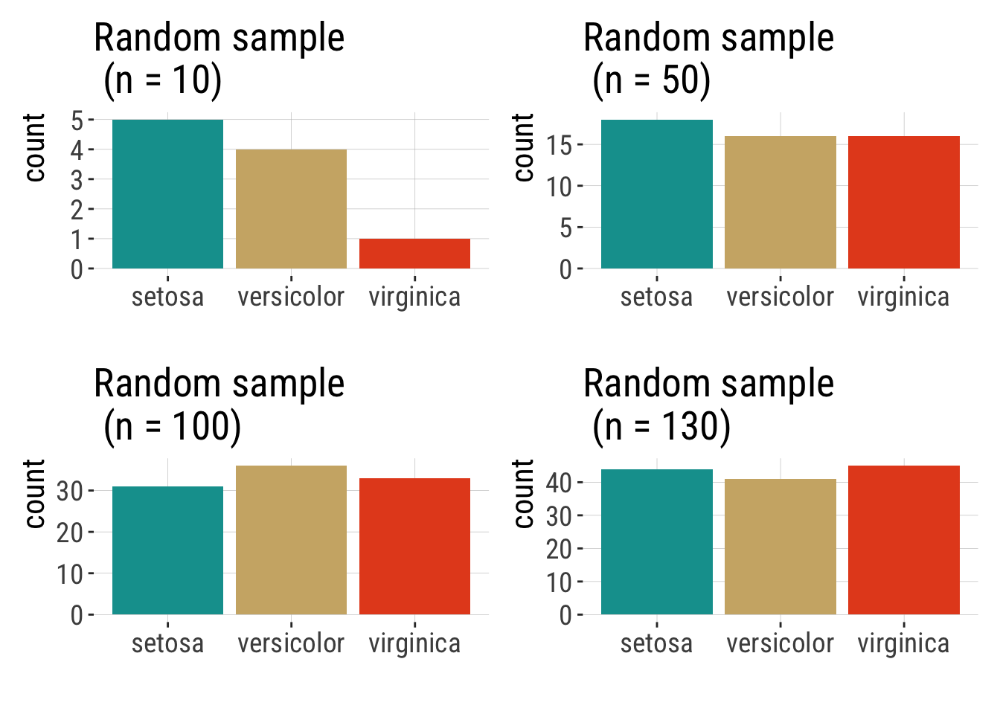
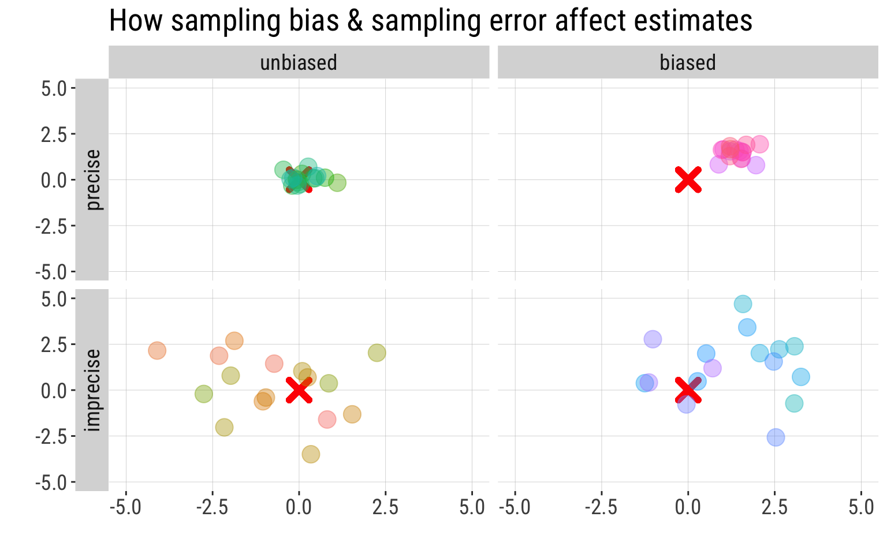

1.2.Sampling error, sampling bias, and the ideal random sample
Keywords
Statistics & Samples
Quick recap
Last lecture we discussed:
- Population vs. sample
- Parameter vs. estimate
- The two types of errors associated with sampling: sampling error and sampling bias
Ask for volunteers to remind these concepts
Today
Goals of statisticsPopulations and SamplesStatistics and parameters- Estimate errors due to sampling
- Types of experiments
- Types of variables
- Types of studies
Learning Goals
Understand the major goal of statisticsDistinguish between a sample and a populationDistinguish between an estimate and a parameter- Identify why estimates from samples may deviate from parameters of populations
- Identify the properties of a good sample
- Be able to detect the differences between observational and experimental studies
These learning goals are for the entire topic/unit. They will also be available in the study guide.
Sampling: What could go wrong?
Meet sampling error and sampling bias
Sampling bias
- If you collected these against a dark background without careful procedures…

- This sample is biased. There is a higher proportion of orange stars than the population from which it was taken. Therefore, it is not a representative sample of the underlying population.

Sampling bias
Systematic difference between parameters & estimates.
Case study: Polls in the 1936 US Election.
The 1936 Election


1936 Literary Digest poll
2.4 million responses to 10 million questionnaires , sent to people from telephone books and club lists.
1936 Literary Digest poll
Election: Roosevelt won in a landslide

Sampling Bias in the 1936 Polls
- Questionnaire was more likely to reach rich people (who could afford phones & attend book clubs) than those with fewer means.
- Voting and party preference are correlated with wealth.
- Poorer people (underrepresented in the poll) supported Roosevelt, carrying him to victory.
Volunteer bias
Volunteers for a study are likely to be different, on average, from the population. Also known as “self-selection” bias.
For example:
- Volunteers for sex studies are more likely to be open about sex.
- In surveys about sexual activity, gender biases answers in opposite directions.
- Volunteers for medical studies may be sicker than the general population.
- Animals that are caught may be slower or more docile than those that are not.
- The case we saw about the 1936 U.S. elections.
Ask for volunteers to name some. The US elections example also involves sample of convenience.
Selection bias
![[Blondie is standing on a podium behind a lectern with a microphone. She is standing under a hanging sign with large text. In front of the podium is an audience of five seated persons all with their hands raised above their heads. The audience includes two guys that look like Cueball, Hairbun, and two other persons with dark and blonde hair.] Sign: Statistics Conference 2022 Blondie: Raise your hand if you’re familiar with selection bias. Blondie: As you can see, it’s a term most people know...](https://imgs.xkcd.com/comics/selection_bias.png)
Sample of convenience
A sample of convenience is a collection of individuals that happen to be available at the time.
Other definitions1:
A convenience sample is the one that is drawn from a source that is conveniently accessible to the researcher.
A purposive sample is the one whose characteristics are defined for a purpose that is relevant to the study.
Sample of convenience
Problems:
- “In research, we therefore implicitly seek to generalize the findings from our sample to the entire population, present and future.”2
- low generalizability. What is true for your sample might not reflect what is true for the population.
- in practice, you can only generalize findings to the subpopulation from which the sample was taken from.
- sometimes, a sample of convenience is the best option researchers have (e.g. studies that extract data from national healthcare or insurance databases)
- It is rarely possible to draw a truly random sample from the population
. . .
This does not invalidate the studies in question. They can have high “internal validity”. The issue is with generalizing, i.e, its external validity.
. . .
However, this is possible only if our sample is representative of the population; a sample is likely to be representative of the population only if it is randomly drawn from the population.
What about sampling error?
Sampling error: Chance deviations between estimates and the truth.
. . .
Even when you did NOTHING wrong.
. . .
. . .
Sampling error is the difference between the estimate and its true parameter value — and it can be quantified!
Example of sampling error
── Attaching core tidyverse packages ──────────────────────── tidyverse 2.0.0 ──
✔ dplyr 1.2.1 ✔ readr 2.2.0
✔ forcats 1.0.1 ✔ stringr 1.6.0
✔ lubridate 1.9.5 ✔ tibble 3.3.1
✔ purrr 1.2.2 ✔ tidyr 1.3.2
── Conflicts ────────────────────────────────────────── tidyverse_conflicts() ──
✖ dplyr::filter() masks stats::filter()
✖ dplyr::lag() masks stats::lag()
ℹ Use the conflicted package (<http://conflicted.r-lib.org/>) to force all conflicts to become errors
The iris data set gives the measurements (in cm) of the variables sepal length and width and petal length and width for 50 flowers from each of 3 species of iris. The species are Iris setosa, Iris versicolor, and Iris virginica.
Sampling error declines with sample size

Estimates are random variables
Because an estimate is a random variable, the value of an estimate is influenced by chance.
Therefore estimates will differ among random samples from the same population.

we’re assuming here that we don’t have the bias issue discussed for this example previously.
How bias and sampling error affect estimates
Sampling Bias
- Systematic difference between estimates & parameters.
- Driven by bias in the sampling process (i.e., sample not random in relation to the population of interest), regarless of sample size.
Sampling Error
- Undirected deviation of estimates away from parameters.
- Driven by chance.
- Decreases with sample size.
Goals of estimation
Accuracy (on average gets the correct answer)
Precision (gives a similar answer repeatedly)

Sampling error vs. bias
In this figure, the “X” is the population parameter. The circles are different estimates calculated from different samples taken from that population.

Properties of a good sample
Independent selection of individuals
- no influence of sampling one individual on other individuals that get sampled.
Random selection of individuals
- each member of a population has an equal and independent chance of being selected
- equality: probability of being selected reflects its representation in the population
Sufficiently large
- What is the point of each of these principles in terms of sampling error and bias and accuracy and precision?
Random samples
Taking random samples is hard and requires effort
- Why are they important? Reduce sampling bias
- How to get a random sample (ideal):
- Carefully characterize a population and use computer code to select participants randomly.

That’s all for today